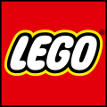
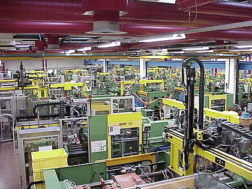
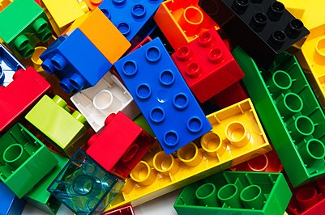
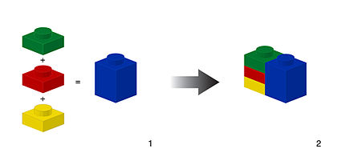
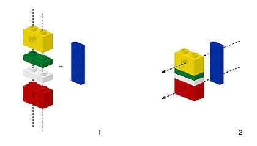
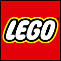
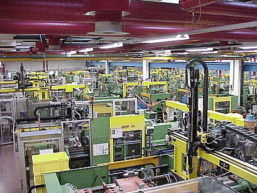
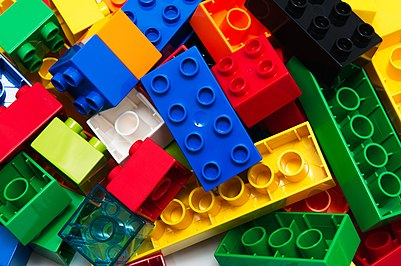
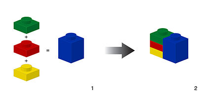
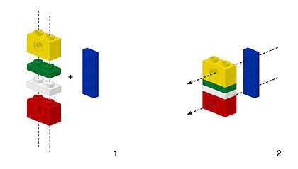

2)Цех по производству кубиков LEGO


3)LEGO
4)Лего-фигура в натуральную величину



2)Цех по производству кубиков LEGO

3)LEGO
4)Лего-фигура в натуральную величину

Год основания 1932
Расположение Flag of Denmark.svg Дания : Биллунд
Ключевые фигуры Йорген Виг Кнудсторп (генеральный директор), Нильс Якобсен (председатель правления), Кирк Кристиансен Кьелль (заместитель председателя правления)[1]
Отрасль Игровая индустрия
Продукция игровые конструкторы
Оборот ▲ 11,661 млрд датских крон (2009)[1]
Операционная прибыль ▲ 7,788 млрд датских крон (2009 год)[1]
Чистая прибыль ▲ $1,291 млрд датских крон[1]
Число сотрудников 7 058 (2009 год)[1]
Сайт lego.com
LEGO (от дат. Leg-godt — «играй хорошо», рус. ле́го) — серии конструктора, представляющие собой наборы деталей для сборки и моделирования разнообразных предметов. Наборы LEGO выпускает группа компаний LEGO Group, головной офис которой находится в Дании. Компания была основана в 1932 году, и её название выглядит и звучит как латинское (а также итальянское) слово lego - собираю, хотя первоначально она выпускала не конструкторы, а обычные деревянные игрушки.
Основным продуктом компании LEGO являются разноцветные пластмассовые кирпичики, маленькие фигурки и т. д. Из LEGO можно собрать такие объекты, как транспортные средства, здания, а также движущихся роботов. Все, что построено, затем можно разобрать, а детали использовать для создания других объектов. Компания LEGO начала производство пластмассовых кирпичиков в 1949 году. С тех пор LEGO расширила сферу своей деятельности, создавая фильмы, игры, конкурсы, а также семь тематических парков развлечений, первым и самым большим из которых является Legoland на полуострове Ютландия, в небольшом городке Биллунд, — город, полностью построенный из конструктора LEGO.
Основой наборов является кирпичик LEGO — деталь, представляющая собой полый пластмассовый блок, соединяющийся с другими такими же кирпичиками на шипах. В наборы также входит множество других деталей: фигурки людей и животных, колёса и так далее. Существуют наборы, в которые входят электродвигатели, различного рода датчики и даже микроконтроллеры. Наборы позволяют собирать модели автомобилей, самолётов, поездов, кораблей, зданий, роботов. LEGO воплощает идею модульности, наглядно демонстрирующую детям то, как можно решать некоторые технические проблемы, а также прививает навыки сборки, разборки и ремонта техники.
Основная статья: Lego Group
Компания LEGO Group была основана в 1932 году. Её основателем стал датчанин Оле Кирк Кристиансен[1]), являвшийся в то время бригадиром команды плотников и столяров[1]. Задача, которая стояла перед работниками компании (поначалу она состояла всего из 7 человек), — создать игрушки, развивающие воображение, изобретательность и творческие способности ребёнка. В 1947 году компания расширила производство и начала выпуск пластиковых игрушек[1]. Начиная с момента своего появления в 1949 году[2], элементы LEGO во всех своих вариантах остаются совместимы друг с другом. Так, элементы, созданные в 1958 году, по-прежнему соединяются с элементами, выпущенными сейчас, несмотря на радикальные изменения в дизайне и форме элементов за эти годы.
Все детали конструкторов LEGO изготавливаются по определённому стандарту с высокой степенью точности (формы для штамповки элементов конструктора производятся с точностью 10 мкм[3]). Кубики, созданные в наше время, можно состыковать с кубиками, выпущенными в 1958; они соединяются без значительных усилий и не отваливаются после соединения. Основа производства — термопластавтоматы, в которых из разноцветных термопластов методом инжекции (впрыскивания) штампуют под давлением 25—150 тонн и температуре +232 °C элементы конструктора[3]. Основные производственные мощности компании расположены в Дании, Чехии, Мексике и Китае. Главный завод в Биллунде (Дания), где в цехах длиной до полукилометра стоят ряды автоматов, штампует около 21 млрд кубиков в год. На это уходит порядка 60 тонн пластика в день. Завод в Кладно (Чехия) выпускает 35—40 % (свыше миллиона деталей) всей продукции компании, также там расположен гигантский роботизированный склад, один из самых больших в Европе, где производится оформление заказов и рассылка продукции по торговым точкам во всём мире.
Полное название: «Ниндзяго. Мастера Кружитцу» («Ninjago. Masters of Spinjitzu»). Пилотный сезон — 4 серии, 1 сезон — «Год Змей» — 13 серий, 2 сезон — «Последняя битва» — 13 серий, 3 сезон — «Перезагрузка» — 8 серий, 4 сезон — «Турнир Стихий» — 10 серий, 5 сезон — «Одержимость» — 10 серий, 6 сезон — «Небесные границы» — 10 серий, Специальный 45-минутный эпизод — «День ушедших», 7 сезон — «Руки времени» — 10 серий, 8 сезон — "Сыновья Гармадона" - 10 серий, 9 сезон - "Загнанные" - 10 серий. Каждый из сезонов посвящён одному из команды Сэнсея Ву (кроме пилотного и четвёртого) — первый и второй сезоны посвящены Ллойду Гармадону (Зелёный ниндзя) и его противостоянию с родным отцом Лордом Гармадоном; третий — Зейну (Белый, а позже титановый ниндзя) и больше рассказывал о его жизни до основных событий мультфильма; четвёртый — Мастерам Стихий, которые прибыли на турнир Мастера Чена; пятый — Морро (бывший ученик Ву) и Ллойду; шестой — Джею Уолкеру (Синий ниндзя); специальный выпуск «День ушедших» — Коулу (Чёрный ниндзя); седьмой — Каю (Красный ниндзя) и его сестре Ние (Бордовый ниндзя), 8 сезон - Ллойду, 9 сезон - всем членам команды, кроме Ллойда, тема сезона - независимость.
В мире достаточно обычны выставки различных композиций из наборов LEGO: в Германии (Целле[5], Гамбург[6]), Голландии (Амстердам[7]), Великобритании (Лондон[8][9][10]), Японии (Токио[11]), Сингапуре[12].
В декабре 2013 года было завершено строительство и произведён запуск полноразмерного автомобиля из деталей LEGO, работающего на поршнях, приводимых в движение сжатым воздухом. Разработчики утверждают, что на сооружение подобного чуда техники ушло около 500 тысяч деталей. Автомобиль развивает скорость до 30 км/ч[13].


2)LEGO World


3)LEGO Гарри Поттер
4)LEGO Хоббит